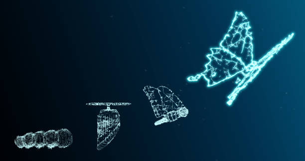

Etapas del Ciclo de Vida de un Ordenador/Móvil
El ciclo de vida de un ordenador o móvil es un proceso complejo que abarca diversas etapas, desde la extracción de materias primas hasta su disposición final. Cada una de estas etapas tiene implicaciones ambientales, sociales y económicas significativas. A continuación, se detallan las principales etapas:
1. Extracción de Materias Primas
La fabricación de ordenadores y móviles requiere una amplia variedad de materiales, incluyendo metales (como oro, plata, cobre, aluminio, estaño, litio y cobalto), plásticos, vidrio y otros componentes especializados. La extracción de estos materiales a menudo implica:
- Minería a gran escala, que puede causar la destrucción de hábitats, la erosión del suelo y la contaminación del agua.
- Altos consumos de energía, contribuyendo a las emisiones de gases de efecto invernadero.
- Problemas sociales, como la explotación laboral y los conflictos en regiones ricas en recursos.
2. Fabricación y Producción
Esta etapa incluye la transformación de las materias primas en componentes y el ensamblaje del producto final. Las actividades principales son:
- Fabricación de componentes electrónicos (microprocesadores, memorias, pantallas, etc.), que requiere procesos de alta precisión y condiciones de sala limpia, con un elevado consumo de energía y agua.
- Ensamblaje de los componentes en el producto final, que también puede consumir energía y generar residuos.
- Uso de sustancias químicas, algunas de las cuales pueden ser tóxicas y contaminantes.
3. Distribución y Transporte
Los ordenadores y móviles se fabrican a menudo en lugares lejanos de donde se venden, lo que implica un transporte global. Los aspectos clave de esta etapa son:
- Transporte por barco, avión y camión, que consume combustibles fósiles y contribuye a las emisiones de CO2.
- Embalaje, que genera residuos y puede requerir materiales adicionales.
- Logística y gestión de la cadena de suministro, que deben ser eficientes para minimizar el impacto ambiental.
4. Uso
La etapa de uso se centra en el consumo del producto por parte del usuario. Los factores importantes incluyen:
- Consumo de energía eléctrica para el funcionamiento y la carga de la batería.
- Durabilidad del producto y frecuencia de reemplazo.
- Necesidad de actualizaciones de software y hardware.
5. Fin de Vida
Cuando un ordenador o móvil llega al final de su vida útil, se convierte en residuo electrónico o "e-waste". Las opciones para esta etapa incluyen:
- Reutilización: Dar una segunda vida al dispositivo, ya sea por el mismo usuario o por otro.
- Reciclaje: Recuperar materiales valiosos de los componentes para su uso en nuevos productos.
- Vertido: Disposición en vertederos, lo cual es la opción menos deseable debido a la contaminación del suelo y el agua.
- Incineración: Quema de los residuos, lo que puede generar emisiones tóxicas.
Impacto Ambiental y Sostenibilidad
El ciclo de vida de un ordenador o móvil tiene un impacto ambiental significativo, que incluye el agotamiento de recursos, la contaminación, las emisiones de gases de efecto invernadero y la generación de residuos electrónicos. Para mitigar estos impactos, es fundamental adoptar prácticas sostenibles en cada etapa del ciclo de vida, tales como:
- Diseño para la sostenibilidad: Crear productos más duraderos, reparables y reciclables.
- Uso de materiales sostenibles: Optar por materiales reciclados, renovables y menos tóxicos.
- Producción limpia: Minimizar el consumo de energía y agua, y reducir las emisiones y los residuos en la fabricación.
- Consumo responsable: Promover la reutilización, la reparación y el reciclaje entre los usuarios.
- Gestión adecuada de los residuos electrónicos: Establecer sistemas eficientes de recogida y reciclaje de "e-waste".